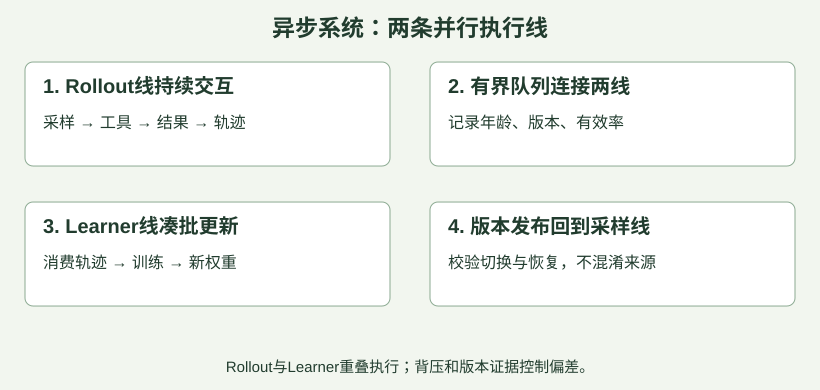
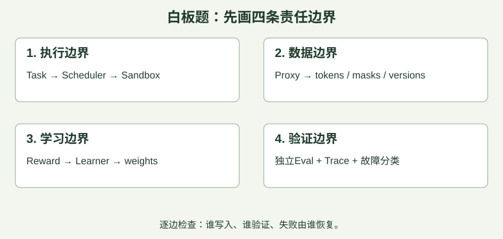

1. 同步/异步与on/off-policy是两条轴
这里要分别回答两个问题：采样与训练怎样安排时间？训练数据由哪个策略生成？ 采样是让模型与环境交互、生成轨迹；训练是用这些轨迹计算损失并更新参数。
① 同步／异步：看采样与训练是否交替等待，还是并行推进。
| 调度方式 | 典型流程 | 主要取舍 |
|---|---|---|
| 同步 | 固定一版策略采完一批 → 训练 → 将新权重同步给采样端 → 再采下一批 | 版本关系清楚，但训练可能等采样，采样也可能等训练 |
| 异步 | 采样端持续生成轨迹并放入队列；训练端同时取出已有轨迹更新，再把新权重发回采样端 | 减少相互等待，但队列里的数据可能来自较旧策略 |
这里的“同步”指采样与训练阶段的协调，不是说所有工具调用必须同时结束；同一批内部也可以并行执行多个任务。
② on-policy／off-policy：用“谁做出来的数据，拿来训练谁”理解。 这里的策略，是模型在给定上下文下选择各个动作的概率分布。生成轨迹时实际使用的策略叫行为策略（behavior policy）；我们希望评估或改进的策略叫目标策略（target policy）。两者可以是同一个模型的不同版本，不一定是两台不同的模型。
| 概念 | 核心含义 | 代码修复任务中的例子 |
|---|---|---|
| On-policy（同策略） | 用目标策略自己与环境交互得到的数据，来评估或改进它 | 当前模型是v12，就让v12尝试修复代码，用这些新轨迹更新；下一轮再让更新后的模型采样 |
| Off-policy（异策略） | 用其他行为策略产生的数据，来评估或改进目标策略 | 当前要训练v12，却使用v9过去生成的修复轨迹；算法需要允许这种不同策略之间的数据利用 |
为什么要区分？因为不同策略会采取不同动作、遇到不同情况。 假设在同一个报错上下文下，v9有80%的概率选择“重装依赖”，v12只有20%。那么v9的日志会更频繁地出现“重装依赖”，不能直接当成v12自身行为的统计。off-policy方法需要通过适当的学习目标或分布校正来利用这些数据；并不是把任意旧日志塞进原来的loss就可以。算法分类说明
PPO为什么通常叫on-policy，却又有old policy？ PPO每轮先固定一个策略采集新数据，这个采样版本随后称为old policy。训练时，对这批数据做若干次参数更新，当前策略逐渐与old policy不同，因此loss里使用新旧策略的概率比，并用裁剪限制继续偏离的收益；这一轮结束后，再用更新后的策略采集下一批。它通常只有限复用本轮新数据，而不是长期从多个旧版本的历史库里反复抽样。 所以PPO仍通常归为on-policy算法，但不意味着每一次梯度更新时，行为策略与当前策略都完全相同。PPO说明
learner更新参数，不等于rollout端立即换权重。 参数更新与权重发布是两个动作；发布频率、切换时机以及未完成任务的处理方式由系统决定。因此，learner到v12时，可能遇到三种情况：
- 尚未发布： rollout端最近收到的是v9，暂时仍用v9生成。
- 队列积压： rollout端已换成v12，但训练端正在使用队列中早先由v9生成的轨迹。
- 中途切换： 长轨迹尚未结束就切换权重，前面的动作来自v9，后面的动作来自v12。
收到v9生成的数据，不代表worker现在仍是v9；一条轨迹也不一定只对应一个版本。 同步流程在多次更新中同样可能复用旧数据。同步／异步描述“什么时候采、什么时候训”，on／off-policy关注“数据来自哪个策略”；重新forward不会改变原动作的采样来源。

对由单一版本生成的轨迹，定义一个简单版本陈旧度：。训练版本12、轨迹由版本9生成，差为3。这个版本差只是代理指标：同样差3个版本，实际参数或分布变化可能不同；应结合logprob差、重要性权重分布与KL等诊断。
Dressage的partial rollout：未完成的生成可以暂停，换权重后继续。 在其支持partial rollout的路径中，流程是：暂停正在进行的生成 → 保存已生成token → 发布新权重 → 以“原输入＋已有输出”为前缀继续生成。因此，不必等所有长轨迹结束；甚至同一次模型生成请求，前后token也可能来自不同版本。代码会记录各部分的生成版本，不能把整条轨迹统一标成最后的v12。暂停、续写与版本记录实现
该异步训练入口按update_weights_interval决定发布时机，发布前等待当前可见的rollout批次返回，再暂停仍在后台执行的生成任务；这与“等所有长任务全部结束再更新”不同。跨版本轨迹应按实际生成位置保留行为策略版本与log-prob，训练时再按算法规则接纳或屏蔽；KV缓存如何处理则取决于推理引擎的更新协议。权重发布实现
权重发布状态机的教学设计： 请求暂停/准入控制 → 确认到安全边界 → 发布完整版本 → 各worker确认 → 恢复流量。发布失败时别让调度器把不兼容版本当作同一批资源；可以隔离未更新worker、回滚或重试，具体取决于方案。
队列需要背压。 若采样长期比训练快，数据积压、内存与陈旧度会同时上升；learner长期更快则缺数据空转。限制在途量、观察队列年龄，协调rollout与训练资源；不是把队列容量无限调大。
重要性校正的边界。 基于概率比值的加权/截断可缓解分布不一致，但需要正确behavior概率与支持条件，也有方差、偏差和有效样本数代价。它不能修复错误reward、无效工具状态或token错配。
例题。 两条轨迹版本差都为2，一条来自很小学习率更新，另一条中间经历大幅漂移。不能因为差值相同就认定离策略程度一样。应查看实际概率变化和质量指标。
原整理核对依据：A1 · AReaL异步训练系统 V4 · verl Rollout Correction D5 · Dressage Rollout Hooks
读完本节，立即练3题
训练版本12，实际生成轨迹的策略版本9，按本节定义版本差是？
- A错误：版本差不是相加。
- B正确：12−9=3。
- C错误：题设定义是训练减生成版本。
- D错误：应减去behavior版本。
关于同步与on-policy，哪句正确？
无脚本阅读：查看答案与解析
正确答案：D- A错误：更新复用和实现差异仍会引入不一致。
- B错误：异步可结合版本控制与校正。
- C错误：这是分布关系，不是机器时钟。
- D正确：同步与策略分布是两个维度。
- A错误：更新复用和实现差异仍会引入不一致。
- B错误：异步可结合版本控制与校正。
- C错误：这是分布关系，不是机器时钟。
- D正确：同步与策略分布是两个维度。
哪些有助于控制异步训练风险？
- A正确：用于诊断和校正。
- B正确：限制积压与陈旧度增长。
- C错误：无限队列会放大资源和陈旧问题。
- D正确：避免把不同状态误当同一发布版本。
继续口述：异步Agentic RL如何平衡效率、陈旧度与训练稳定性？
先闭卷讲2分钟，再对照要点；页面不自动判断口述正确性。
展开口述自检要点
- 先区分调度与策略分布。
- 解释版本粒度、队列背压与发布协议。
- 讨论校正的适用前提与代价。
2. 吞吐优化：看有效样本，而不只看GPU忙不忙
一次Agent任务的wall time可能包含：排队 → 沙箱启动 → 多轮prefill/decode → 工具与环境等待 → grader → 数据转换/传输 → 训练消费。GPU利用率低可能只是等待工具，不等于推理kernel慢。
| 指标 | 回答的问题 |
|---|---|
| token/s/GPU | 推理生成效率怎样，是否含无效/重复token |
| 有效轨迹/s | 能进入训练的数据产生得多快 |
| 每成功任务成本 | 达到真实目标到底花多少资源 |
| queue age / version gap | 数据是否积压、是否变旧 |
| sandbox启动/工具/grader p95 | 长尾在哪个环节 |
| 同预算下测试成功率 | 系统优化是否仍保留学习效果 |
流水线手算。 每批rollout耗时 秒，训练 秒。串行每批65秒。理想双阶段、资源独立且无其他开销时，稳态每批下界约 秒；不是25秒，也不是第一批40秒就完成全部训练。3批串行为195秒，理想流水为 秒，首尾开销不能漏。
有效率手算。 方案A每分钟产生100条轨迹，但只有60%能按约定进入训练，得到60条有效轨迹；方案B每分钟90条，90%有效，得到81条。B的有效吞吐更高。仍需检查任务分布与信息量：更容易的81条不一定比困难的60条带来更大学习收益。
缓存与负载均衡的权衡。 同一session留在同一engine可复用KV，但长任务集中会拖慢尾部。迁移要比较“省掉的排队等待”与“KV恢复/重prefill/传输”的代价。教学例：留原engine预计等8秒；迁移恢复和额外计算总共3秒，可考虑迁移；若代价12秒，单看空闲engine就迁移反而更慢。真实决策还需观测延迟与正确性条件。
环境并发不是越大越好。 多开沙箱可掩盖工具等待，也可能加重CPU、内存、API和I/O竞争。推理batch增大可提高某些吞吐，但KV容量、长尾、任务依赖与延迟也受影响。用阶段trace定位，再做单变量实验。
例题。 GPU从50%升到90%，但因重复调用增加，成功任务/小时下降。这个优化不该仅靠GPU数字被宣布成功，应回到有效学习吞吐与真实任务目标。
原整理核对依据：A1 · AReaL异步训练系统 D6 · Dressage Step Balance D4 · Dressage 轨迹存储重构
读完本节，立即练3题
rollout40秒、训练25秒，独立双阶段理想流水处理3批，总时长为？
- A错误：漏掉最后一批训练收尾。
- B正确：首批65秒，后两批各增加40秒，合145。
- C错误：这是完全串行。
- D错误：只算了训练阶段。
A每分钟100条且60%有效，B每分钟90条且90%有效。有效轨迹数分别是？
- A错误：这是原始数量。
- B错误：B也要乘有效率。
- C正确：100×0.6=60；90×0.9=81。
- D错误：算成了无效轨迹数量。
哪些判断合理？
无脚本阅读：查看答案与解析
正确答案：ACD- A正确：空闲目标不等于零切换成本。
- B错误：忙碌可能来自无效或重复工作。
- C正确：下游共享资源会成为瓶颈。
- D正确：防止以更容易的数据换取表面吞吐。
- A正确：空闲目标不等于零切换成本。
- B错误：忙碌可能来自无效或重复工作。
- C正确：下游共享资源会成为瓶颈。
- D正确：防止以更容易的数据换取表面吞吐。
继续口述：rollout很慢，怎样判断是推理、沙箱、工具还是数据面的问题？
先闭卷讲2分钟，再对照要点；页面不自动判断口述正确性。
展开口述自检要点
- 分阶段计时并看长尾。
- 区分raw TPS与有效样本及任务成本。
- 解释并发、缓存与迁移的权衡。
3. Accio讨论：Dressage、Occamy、SAO与CompactionRL
这一节来自公开技术材料，不是新增面经原题。目标是让你能提出有根据的问题，而不是背诵团队报告。
Dressage是基础设施，SAO是优化方法，Occamy是训练后的模型。 它们不在同一层。Dressage公开实现连接Agent/harness、沙箱、轨迹代理与训练；其运行模式与算法配置不应直接等同于论文中某一次实验。
SAO为什么提single-rollout？ SAO原论文围绕长程异步训练中组采样与离策略挑战，采用每prompt一个rollout，结合value-model训练和严格的双侧token级限制。它需要有意义的优势估计，不是组大小1的原式GRPO。代价要考虑critic训练质量、warmup、更新成本与控制偏差的机制。
CompactionRL关心另一维度： 上下文压缩后任务还在继续，执行与摘要生成都可能是可学习行为，需要跨段信用分配和合适的token loss归一化。把摘要放进prompt不自动等于训练过压缩能力；也不能把“历史变短”误当成环境状态回滚。
Occamy报告的连接方式： 公开配方使用不同专长的训练与参数合并，再做SAO阶段；附录描述了critic与多segment处理。报告里的具体超参数是其配置，不能照抄为所有Agentic RL的通用最佳值。
下面三个问题配有面试参考答案，其中实验是建议方案，不代表已经实施或论文已经验证的结论。
问题1：工具等待使rollout长尾很大，优先改并发、step调度，还是异步学习？
参考答案：先定位等待发生在哪里，再选择改动，不能只看到长尾就直接换异步。
- 先测瓶颈： 将耗时拆成模型生成、工具执行、排队与批次等待，查看P50/P95耗时、推理GPU利用率和沙箱资源占用。
- 再选方案： 如果大量任务在等工具、推理GPU却空闲，可增加独立任务并发，用其他任务填补等待；如果不同推理worker负载不均，可按模型调用步骤调度，但要计入KV缓存迁移或重建成本；如果主要是learner等整批最慢任务，才重点考虑异步采样与训练，并限制队列积压和策略滞后。这些方案可以组合，但不要一次全部修改。
- 保持证据一致： 记录真实输入token、模型输出、工具返回、行为策略版本及采样log-prob；跨版本续写要按实际生成位置记录，训练重放时保持原上下文。固定模型起点、任务和验收规则，逐项对照，报告单位时间的有效轨迹数、训练稳定性，以及相同总成本下的独立任务成功率。
记忆句：先拆耗时，再改调度；既看吞吐，也看训练是否真的变好。
问题2：compaction后忘记关键约束，改摘要、训练摘要，还是改状态表示？
参考答案：先判断是“摘要漏了”，还是“写进摘要后模型仍没用上”。
- 摘要漏了： 先用结构化字段保留任务目标、不可违反的约束、已修改内容、已验证结论和待办。例如“不能修改公共API”应明确保留；稳定的关键约束也可放入每轮可见的任务状态中。
- 摘要有但没遵守： 检查摘要是否实际进入后续上下文、是否被截断或存在矛盾，再考虑训练模型利用压缩后的信息。如果要训练摘要生成本身，必须明确把策略生成的摘要动作纳入训练；仅把外部摘要作为上下文，不等于训练过摘要能力。
- 区分贡献： 从同一基线分别测试“只改摘要格式”“只改任务状态表示”“只增加摘要行为训练”，再测试组合。固定压缩触发规则、摘要长度上限与评测预算，按任务长度、压缩次数比较约束保留率、约束违例率和最终成功率。必要时用人工核对的完整摘要作诊断对照，区分信息丢失与后续执行问题。
记忆句：先查信息有没有保住，再查模型会不会用；逐项对照，避免把工程改动算成训练收益。
问题3：single-rollout省下组采样，怎样验证critic与探索覆盖足以补偿？
参考答案：critic提供优势估计，但不会自动补足探索；最终要比较同等总成本下的学习效果。 SAO使用每prompt一个rollout并结合value-model等设计，不是把原式GRPO的组大小直接设为1。SAO论文
- 查critic信号： critic估计当前上下文的预期回报，为优势计算提供基线。在未用于拟合的轨迹上检查价值预测与回报目标的误差、偏差，按任务难度分桶；再做critic预热或更新配置的消融，看优势估计和训练结果是否稳定，不能只看critic训练loss下降。
- 查探索覆盖与总收益： single-rollout指每个prompt本次采一条，不是训练总共只有一条，也不禁止以后重访。省下的采样预算可覆盖更多任务或安排重访；应检查成功轨迹覆盖了多少任务、是否遗漏难题和不同解法。对比组采样基线时，把critic预热、训练、显存及工具执行都计入成本，并在相同评测预算下比较独立任务成功率与多次运行的波动。
- 何时可能不值得换： 任务短、采样便宜而critic开销大；奖励极稀疏、当前策略几乎探索不到成功；或任务变化很快、critic持续失准时，节省的组采样成本可能抵不过信号质量下降。此时可保留组采样，或先改善示范与探索，再验证是否切换。
记忆句：critic看准不准，探索看够不够，最终看同成本下学得好不好。
可回答的消融设计。 固定起始模型、harness、任务集与预算，对比“仅推理时压缩”和“压缩行为参与训练”；按任务长度/压缩次数分桶，报告成功率、成本、遗忘类型和约束违例。不要只比较总体reward曲线。
例题。 面试官问“你觉得我们还可以优化什么”，可先说一个具体假设：“长尾任务集中时，缓存局部性和负载均衡存在冲突，我会先量化尾部等待及KV恢复开销，再做收益门控实验。”这只是你提出的实验方向，不要把它描述成你已经做过的优化。
原整理核对依据：D0 · Dressage README P7 · Single-Rollout Asynchronous Optimization P8 · CompactionRL O1 · Occamy-1.0 技术报告
读完本节，立即练3题
“single-rollout训练就是把原式GRPO的G设为1，其余完全不变。”最合理的判断是？
- A正确：G=1中心化会归零，需其他信号与算法设计。
- B错误：唯一奖励等于组均值。
- C错误：调度不决定优势等价。
- D错误：执行环境不补齐学习估计器。
要检验压缩行为参与训练是否有效，哪种对照较合理？
- A错误：多种变化混杂。
- B错误：短摘要不证明保留了任务状态。
- C错误：不足以判断泛化。
- D正确：控制主要变量并看长任务差异。
关于团队公开材料，哪些说法正确？
无脚本阅读：查看答案与解析
正确答案：ACD- A正确：不同对象不能互相替代。
- B错误：参数依实验任务和系统而定。
- C正确：文件和外部操作通常仍然存在。
- D正确：区分已做结果与建议，有助于可信讨论。
- A正确：不同对象不能互相替代。
- B错误：参数依实验任务和系统而定。
- C正确：文件和外部操作通常仍然存在。
- D正确：区分已做结果与建议，有助于可信讨论。
继续口述：如何把你熟悉的框架经验迁移到Accio公开训练体系？
先闭卷讲2分钟，再对照要点；页面不自动判断口述正确性。
展开口述自检要点
- 区分系统、算法与模型。
- 解释single-rollout与critic及压缩信用分配。
- 提出有约束、有验证的具体实验。
4. 三面演练：项目证据、系统设计与故障排查
面向Agentic RL、沙箱和训练技巧的技术面试，准备重点是从“知道怎么做”推进到“为什么这样做、能证明什么、边界在哪”。这是复习与演练建议，不是已确认的面试官题单。
4.1 面试主问题：Claude Code不受rollout worker直接控制，怎样暂停？
先区分“暂停生成以更新权重”和“终止整个任务”。 rollout worker是任务调度者，Claude Code是独立运行的Agent脚手架，SGLang才是实际生成token的模型服务。取消worker的一次等待，或给模型发一句“请暂停”，都不等于这三层已经一起停下；但这也不意味着Claude Code进程无法被终止。
可直接复述： “我会控制脚手架必须经过的模型API入口。把Claude Code的模型地址指向沙箱内代理，再转发到Dressage推理代理。更新权重前，代理阻止新生成，并中断或等待正在进行的生成，确认已停稳后才发布权重；开启partial rollout时，保存已有token，恢复后继续生成。这个机制暂停的是模型请求，不会自动停止已启动的测试或shell。若要取消整个任务，还需终止Agent及其子进程、清理沙箱并确认租约释放。”
以下按Dressage公开提交3e3142f核对；这是源码说明，未在本机实际部署GPU推理集群。你的面试经历用于确定复习重点，不据此推断面试团队的内部实现。
4.2 先画清楚：沙箱、脚手架和两层代理各做什么
rollout worker / Paddock（组织一次任务尝试）
└─ SandboxProvider.create → 租到一个沙箱
└─ BlackboxServer（会话与Agent进程管理）
└─ Claude Code（规划、调用工具、继续提问）
├─ shell / 文件工具 → 沙箱工作目录
└─ 模型API → 沙箱内RolloutLLMProxy
→ Dressage Proxy
→ SGLang（运行被训练模型）
训练控制 → pause / resume → 代理与生成控制器
训练数据 ← token、采样log-prob、版本等 ← Dressage Proxy
Claude Code在这里是脚手架，不代表底层一定使用Claude模型。 Dressage的公开SWE-Gym示例用Claude Code组织工具交互，实际模型是自托管Qwen。命令执行发生在沙箱里，模型推理发生在GPU服务端。官方接入示例
| 组件 | 具体职责 |
|---|---|
| Paddock / SandboxProvider | 前者组织任务执行；后者申请、释放沙箱，提供命令与文件接口，返回带端点的租约（lease） |
| BlackboxServer / Adapter | 建立会话，配置并启动脚手架，收集执行结果，暴露暂停、恢复、终止等管理接口 |
| 沙箱内RolloutLLMProxy | 接住脚手架的模型请求，转换协议，补充session、turn、instance标识，并可阻挡新请求 |
| Dressage Proxy / GenerationController | 对接SGLang，控制在途生成的中断与续写，记录训练所需token、log-prob和版本 |
为什么需要两层代理？ 沙箱内代理解决“黑盒脚手架怎么接进来、请求属于哪个任务”；Dressage Proxy解决“如何控制实际生成、如何保存训练证据”。它不是普通HTTP转发，更不是通过代理偷偷给模型塞一句“暂停”。全局权重更新也可以直接调用Dressage Proxy的控制接口，不必逐个向Claude Code发送消息。沙箱内代理实现
4.3 Dressage的沙箱怎样搭建与回收？
公开provider为local_bwrap和e2b，由DRESSAGE_SANDBOX_PROVIDER选择；不能将它们笼统说成“都是Docker容器”。
| 后端 | 搭建方式 | 每次任务结束后 |
|---|---|---|
| local_bwrap | Ray管理slot池，bubblewrap建立隔离执行空间；每个slot有自己的home、work、runtime、tmp，blackbox模式运行BlackboxServer | 释放租约，按reset策略重置slot；默认hard路径停止服务、清理残留进程、重建或归档可写目录，再启动并检查服务 |
| E2B | 从预制template创建远端沙箱；blackbox任务需要在其中安装并启动BlackboxServer，再取得可访问的服务端点 | 通过provider终止远端沙箱，回收资源 |
本地runner将工具/运行时路径只读挂载，将每个slot的可写目录单独挂载。实际隔离强度要看配置：所核对runner默认不独立划分network和PID namespace，不能说“用了bwrap就自动隔离全部网络和进程”。 CPU、内存、进程数限制也要确认对应资源控制实际生效。provider工厂、本地runner
租约释放不等于立刻可复用。 重置期间slot不能接下一条轨迹；源码用generation等标识防止旧任务的迟到清理误伤新任务。home、tmp、Agent会话及残留进程都可能污染下一次尝试，只清理代码目录不够。soft reset与hard reset语义不同，不能一概保证进程已被清理。slot目录重置、重置状态机
4.4 Claude Code实际怎么配置？OpenHands能直接替换吗？
Claude Code是已有适配器。 SWE-Gym接入准备好/testbed仓库与测试依赖、Claude Code可执行程序、BlackboxServer，并让服务监听31000端口。初始化会话时选择blackbox_type=claude_code，通过backend_options配置工作目录、model、max_turns与permission_mode；不要把训练器参数和脚手架参数混为一谈。
适配器实际做了三件事：
- 准备独立运行目录： 给会话设置HOME、Claude配置目录和临时目录，清除继承的模型网关配置，避免误连其他模型服务。
- 重定向模型请求： 设置
ANTHROPIC_BASE_URL=http://127.0.0.1:<沙箱内代理端口>；本地代理将Anthropic Messages协议转换为上游支持的OpenAI chat格式，并将响应转换回来。外部DRESSAGE_PROXY_URL必须能从沙箱访问，远端沙箱中的localhost不是训练主机。 - 启动CLI： 使用
claude -p ... --output-format stream-json，指定model、max-turns、settings等，并通过session-id／resume管理会话。后台启动为独立进程组，便于终止时处理子进程。配置与启动代码
最小验收： 在一个干净沙箱里完成“模型发出读文件调用 → 工具返回 → 模型继续生成”，确认请求经过代理、会话标识正确、token和log-prob完整，再跑暂停恢复测试。只看到CLI能输出文字，还不能证明训练链路接通。
OpenHands需要区分现成能力与待做接入。 这个Dressage提交的adapter工厂只有opencode、openclaw、claude_code、codex，OpenClaw不是OpenHands；不能直接把blackbox_type改成openhands就宣称已支持。适配器列表
OpenHands官方SDK示例通过LLM(model, base_url, api_key, ...)配置模型，给Agent注册terminal/file editor等工具，再用Conversation绑定workspace；示例也提供conversation.pause()及再次run()的控制方式。但框架级pause不自动等于SGLang请求已中断，也不自动冻结全部工具进程。 本地workspace路径本身也不是隔离沙箱。官方配置与暂停示例
若要接入Dressage，需新增适配器：将模型base_url接入可达的代理，映射会话/turn ID，将工具执行绑定到受控workspace，并实现initialize、send_message、pause/resume、abort与health。还要实测工具协议、超时、重试和暂停边界。远端workspace还需要可达的模型端点；不能沿用开发机localhost。以上是接入方案，不是该Dressage版本已有的OpenHands集成。
4.5 深挖暂停：怎样确认停住，又怎样不中断长任务？
以Dressage支持partial rollout的生成路径为例：
- 关准入： 代理设置暂停状态，新模型请求等待恢复，不再进入新生成。
- 处理在途请求： GenerationController按request ID请求SGLang中断，收集已生成token、采样log-prob和版本；黑盒脚手架的HTTP调用保持等待，而非收到半个工具调用就去执行。
- 确认停稳： 等待部分输出保存完成，检查
quiesced=true和活动生成数；中断失败可能退化为等待自然完成，超时则不能当成已停稳。这里HTTP连接仍可存在，HTTP in-flight不为零不代表GPU还在生成。 - 更新并恢复： 发布权重，检查后端ready，再放行；以“原输入token＋已有输出token”续写，拼接成一次完整响应，并保留各部分实际生成版本。
v9生成了前缀 → 暂停并保存 → 发布v12 → v12接着生成
脚手架看到：一次完成的模型响应
训练端看到：前半段来自v9，后半段来自v12
上述续写需要启用--dressage-partial-rollout；相关token版本记录、旧版本token是否mask还由训练配置决定。“代理暂停”“CLI会话resume”“从原token前缀续写”是三个不同层次，不能只看到resume这个名字就认为语义相同。 生成控制器
为什么不会把半个JSON交给工具执行？ 所核对Dressage路径先完成SGLang非流式/generate，再向脚手架输出模拟流式响应，等待期间可发SSE心跳保活；它不是把中断时的半截工具参数直接发出去。若改成真正逐token对外流式输出，就需要重新处理半截响应、重试与工具执行边界。响应实现
源码中的一个检查缺口：HTTP成功不能代替停稳确认。 BlackboxServer路径会拒绝quiesced=false；但所核对的异步训练入口在调用中央代理pause后，仅检查HTTP成功、记录返回值，没有显式拒绝该字段为false。面试中可提出“在发布权重前增加停稳断言与失败隔离”作为改进建议，不能说原实现所有入口都已有此保证。BlackboxServer检查、异步入口
4.6 如果正在跑pytest，代理能停掉它吗？
不能仅靠模型代理保证。 pytest是脚手架已经启动的工具进程，不需要不断请求模型就能运行。代理暂停后它可能继续执行、改写文件或返回结果；Agent通常会在下一次模型调用处等待。暂停生成适合权重切换，但不等于冻结整个任务状态。
| 目标 | 应控制的层 | 验收依据 |
|---|---|---|
| 暂停模型生成，稍后续写 | 代理准入＋推理引擎request ID中断 | 已停稳、前缀可恢复、版本可追踪 |
| 取消这次任务，不再继续 | 会话abort＋Agent/工具进程组终止＋沙箱回收 | 进程与租约确实消失，残留任务不再写文件 |
| 冻结整个执行环境后恢复 | 另需平台提供进程/容器/VM级暂停能力 | 内存、文件、连接与外部副作用的边界逐项验证 |
Claude Code适配器的abort会对进程组发送SIGTERM，等待3秒，未退出再SIGKILL；本地sandbox runner还实现了残留进程清理。杀掉父进程不一定清掉所有脱离进程组的后代；冻结环境也不会撤销已经发生的外部写入。 结束任务后需验证回收结果，而不是只看取消函数返回。终止实现
如果请求超时，Agent可能已经执行了部分工具动作，不能盲目重发整个任务。BlackboxServer用turn ID与消息hash区分重试，未知结果可能进入unknown／desynced状态；需要核对实际状态、终止或重建，避免重复执行。模型暂停期间也要处理超时预算和心跳，但不能假设所有网关、工具和总任务时限都自动延长。
4.7 面试前应准备的四个验证实验
这些是建议验证方案，尚未在本机执行集群实测：
| 实验 | 操作与应检查结果 |
|---|---|
| 生成中暂停 | 长输出时请求pause，确认新请求被挡、活动生成停稳、原HTTP等待；resume后无重复/遗漏token，版本与log-prob对齐 |
| 工具中暂停 | 启动会持续写标记文件的测试工具后pause；观察它是否仍运行，明确只停模型的边界；再abort，确认进程与后续写入停止 |
| 更新/网络故障 | 注入pause超时、abort失败或推理服务未ready；系统不能误报已安全更新，未知结果不能静默重试成另一条“完整”轨迹 |
| 回收与复用 | 任务A在home/tmp留下标记并启动子进程，释放后让B复用slot；确认标记、进程、会话与旧租约都不会污染B |
应保留task/trajectory、session、turn、request、lease与slot generation标识，以及pause耗时、活动生成数、版本变化、有效token数和失败原因。评测器也要与可写工作区分离；公开SWE-Gym方案将补丁送入全新评测沙箱，而不是信任Agent改过的测试器。
最终记忆顺序：接管模型入口 → 关准入 → 停稳在途生成 → 发布权重 → 恢复续写；真正取消任务时，再终止进程并回收沙箱。
4.8 回到项目表达与故障定位
项目3分钟模板：
- 目标与约束（30秒）：任务是什么、原链路卡在哪、预算和环境限制是什么。
- 本人决策（60秒）：我负责哪部分，比较了哪两个方案，为什么选这个。
- 证据（60秒）：基线与测试条件、效果及代价、失败样例与消融。
- 边界（30秒）：目前不足，下一步先验证哪个假设。
真实数据未知就填“待补”，不要编GPU数量、训练天数、收益百分比。保留一段可展示的伪代码或张量shape说明，准备被追问。
系统设计白板题（自编）。 给你一批异步长程工具任务，每任务可能持续1～20分钟，沙箱池有限，模型不断更新。设计训练系统。先确认吞吐目标、可靠性、任务预算与隔离需求；再画数据流，逐个标出：task ID、租约、状态机、队列、reward、token版本、learner、权重发布和观测。最后讨论长尾、故障恢复、数据污染和资源不足。

故障题（自编）。 “扩容后reward不涨、GPU空闲、主节点内存持续涨。”不要直接调学习率。先建立三组假设：①环境/工具延迟导致数据不足；②轨迹在队列/对象存储重复驻留；③训练信号失效或版本差过大。按阶段trace、队列年龄、对象持有者、有效mask数量、奖励方差与版本差取证；缩小规模复现，每次只改一个变量。
回答不知道的问题。 “这个底层细节我没有实测；我已确认的是A，怀疑B，可以通过C实验区分。”这比编造参数更能体现工程判断，但C需要是具体可操作的测量。
三条反问。 当前最希望该岗位解决的是rollout吞吐、数据正确性还是训练稳定性？算法、推理与环境团队如何分工？团队用什么指标决定一个infra优化确实改善了模型学习？
面前最后一轮闭卷： 沙箱四层状态 → 组优势手算 → 正负clip → mask与分段 → 异步版本/背压 → 一次真实故障 → 一个团队技术观点。每项先讲两分钟，再接受三次“为什么”。
原整理核对依据：M1 · 阿里国际Accio 后训练 二面 M2 · 【暑期实习】阿里云AI infra三面复盘 D0 · Dressage README D1 · Dressage Sandbox Backends D2 · Dressage Training Layer D3 · Dressage Inference Proxy D5 · Dressage Rollout Hooks
读完本节，立即练3题
扩容后GPU空闲、主机内存增长、reward不涨。合理的首轮行动是？
- A错误：尚未确认是优化强度问题。
- B正确：症状跨层，需要证据区分假设。
- C错误：可能隐藏平台或数据错误并引入偏差。
- D错误：一个指标不足定位整个链路。
面试介绍尚未量化的新方案时，哪种表达可信？
- A错误：未测数字不可冒充实测。
- B错误：别人的环境不验证自己的实现。
- C正确：把提议与结果分开，并给出验证路径。
- D错误：成本和正确性会影响方案价值。
三面项目证据应包括哪些内容？
- A正确：能验证参与深度。
- B正确：让收益可评估。
- C正确：说明工程判断与诚实边界。
- D错误：名称不能证明理解和贡献。
继续口述：请设计一个异步Agentic RL系统，并解释最容易失真的两处边界。
先闭卷讲2分钟，再对照要点；页面不自动判断口述正确性。
展开精简参考答案
记忆顺序：任务进沙箱 → 模型经代理 → 停稳再换权重 → 保留训练证据 → 独立评测。
我先确认并发量、任务时限、隔离要求和更新频率，再设计沙箱租约池：worker申请环境，BlackboxServer启动Claude Code等脚手架，工具在沙箱执行，模型请求经过本地代理与Dressage Proxy到达推理服务。
第一处边界是“暂停生成”与“停止任务”。 权重切换时阻挡新请求，处理在途生成，确认停稳后更新；partial rollout保存原token前缀，更新后继续。代理不自动停止pytest等工具；若取消任务，还要终止Agent及工具进程、清理可写状态并验证租约回收。
第二处边界是“看到的文本”与“可训练的轨迹”。 要记录动作生成时真实上下文、token、采样log-prob及版本；跨版本不能统一标成最后版本，工具反馈不能冒充模型输出。重试也要靠turn ID和状态判断，避免重复执行或重复计入训练。
最后把允许提交的产物放入独立可信环境评测，并用生成中暂停、工具中暂停、故障注入和沙箱复用四类实验验证。具体部署规模和实测结果应补充自己的项目证据。
展开口述自检要点
- 先确认目标和约束，再画完整数据流。
- 至少讨论环境reset与token/版本正确性。
- 以可观察证据区分性能与学习信号问题。